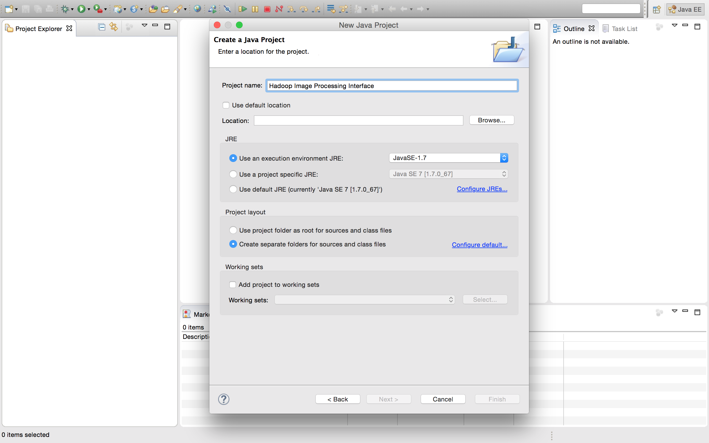
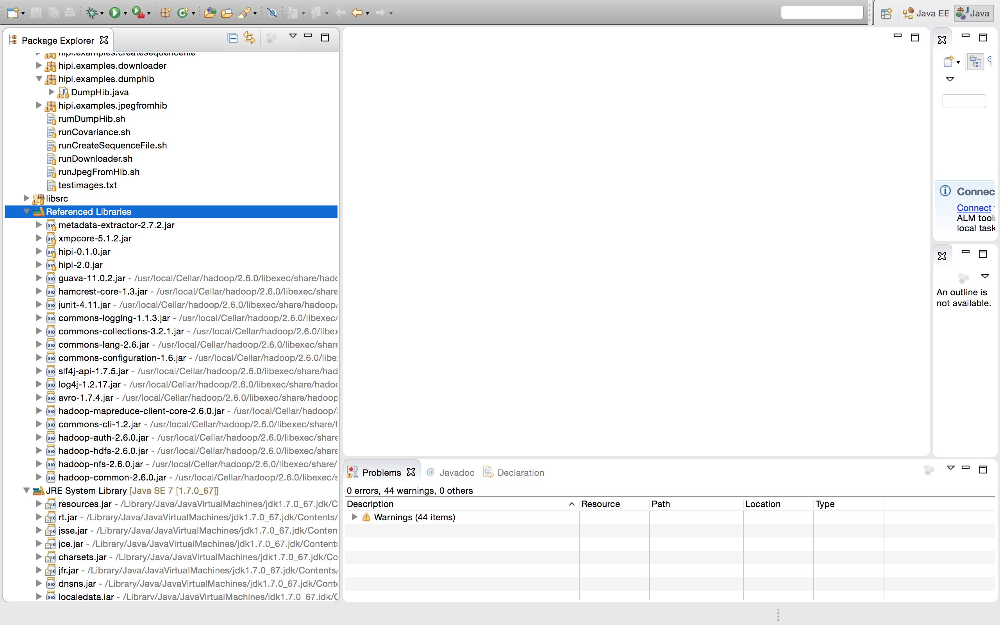
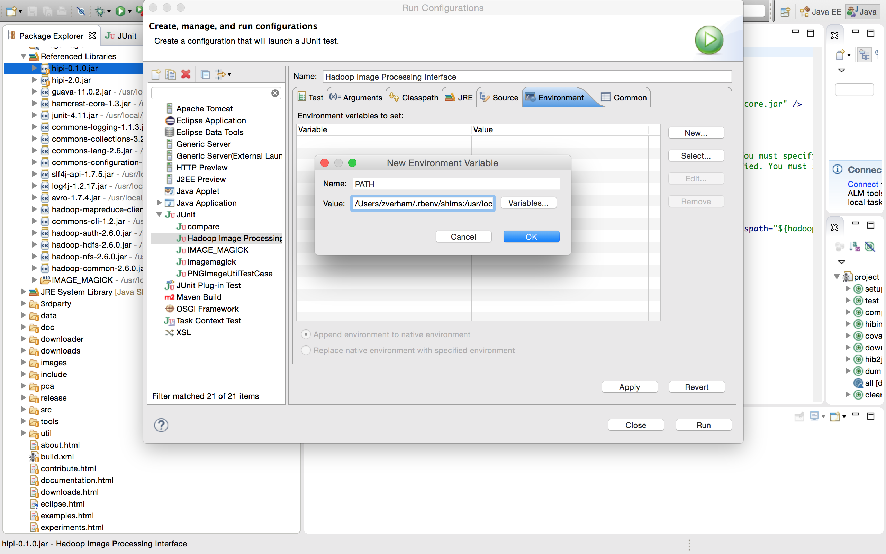

Eclipse Setup Tutorial
This brief tutorial will help you get your Eclipse environment configured to run both the HIPI unit tests and the Eclipse debugger. This tutorial assumes that you have completed the initial setup and installation procedures described on the
Getting Started page. It is also assumed that you have at least a working understanding of
Eclipse.
1. Import Hipi Into Eclipse Workspace
Before HIPI can be configured to work with Eclipse, it must be imported into your workspace. In order to import HIPI into your Eclipse workspace, navigate to
File -> New -> Java Project. Uncheck "Use Default Location", and manually set the location to your HIPI directory.

This will configure your HIPI project directory in your Eclipse workspace as an Eclipse project.
2. Configure Referenced Libraries
Now that HIPI has been imported into Eclipse, you are probably seeing many errors because of undefined imports. To fix this, you need to make sure that your Eclipse project is referencing the same .jar files which are specified in your root ant buildfile. In order to configure these references, open your project in the
Package Explorer and right-click on the
Referenced Libraries directory. Navigate to
Build Path -> Configure Build Path... -> Add External JARs..., and select the required JARs as specified in your root build.xml file. Your build.xml file should also indicate where these jars reside on your system. The snapshot below provides an example of an Eclipse project with configured
Referenced Libraries directory.

3. Configure Runtime Environment Variables
The final step in your Eclipse configuration is ensuring that your runtime references the correct path. This is necessary to ensure that tests which make use of the
ImageMagick library can find the location where ImageMagick is installed. To configure this component, first, make sure that ImageMagick is included on your local system's
$PATH variable. Next, in Eclipse, left-click on the downward-facing arrow which is next to Eclipse's
Run button (represented as a green circle with a right-facing arrow). In the subsequent menu, navigate to
Run Configurations... -> Environment -> New... . Create a
New Environment Variable called
PATH, and copy/paste the contents of your system's
$PATH variable as your new environment variable's
Value. Select
OK -> Apply -> Run . Eclipse should now run your unit tests with no problem!

4. Important Notes
Note that four HIPI unit tests will not pass - these unit tests require specific Hadoop Configurations which are not set unless an actual Hadoop job is being run. A solution to this problem is forthcoming.
Next Steps
Return to the Getting Started page to continue learning about HIPI.